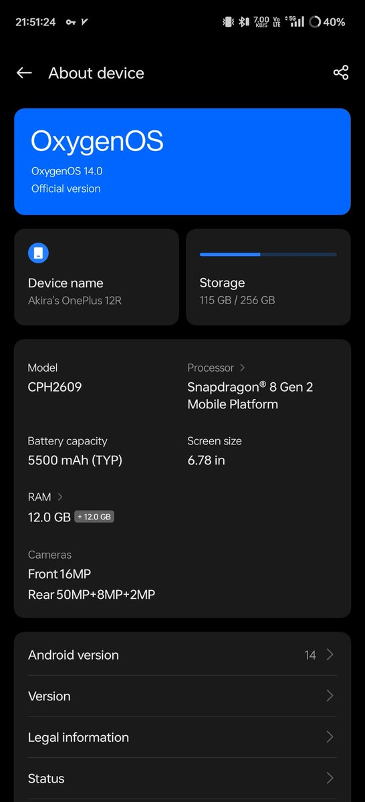

是阿棄喵🥺♥️
@Ak1raQ_love
@TorisResso @Starlight4You_ 我这个系统貌似和color os没太大区别但是很纯净一点广告都没有

👋🏻Toris is lonely🦔
@TorisResso
@Starlight4You_ 关掉就好了，
而且作为ColorOS十几年的用户来说，可以很负责任的说，所有广告都是能关掉的，只是需要一个一个点设置，确实很麻烦。
要是懒得一个一个点的话，当我没说。
安卓和iOS的系统各有优缺点，看自己能接受哪个了。
我个人反正是接受不了苹果的独家账号数据，以及一些很头疼的软件下载与渠道问题